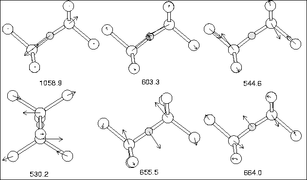

A single oxygen atom was placed at a central BC site of the 148 atom
cluster and all atoms relaxed. The Si-O bond lengths are 1.607 and
1.616 Å, with a 175 bond angle. The Si-Si bond is dilated
to 3.219 Å, an increase of 37%, by the presence of the oxygen atom.
These results are in good agreement with experiment (36% bond
dilation, 160-180
bond angle. The Si-Si bond is dilated
to 3.219 Å, an increase of 37%, by the presence of the oxygen atom.
These results are in good agreement with experiment (36% bond
dilation, 160-180 angle), as well as the quartz bond length of
1.60-1.61 Å[119]. The next Si-Si bonds along the (011)
plane are compressed by
angle), as well as the quartz bond length of
1.60-1.61 Å[119]. The next Si-Si bonds along the (011)
plane are compressed by  3.9%. The structure is shown in
Figure 6.2. Local vibrational modes are given in
Table 6.3, with the corresponding atomic motion shown in
Figure 6.3.
3.9%. The structure is shown in
Figure 6.2. Local vibrational modes are given in
Table 6.3, with the corresponding atomic motion shown in
Figure 6.3.
The isotope shifts are in excellent agreement, the absolute values are reasonable although the asymmetric stretch is a bit low. The symmetric stretch is also in excellent agreement, since it is experimentally believed to lie at 612.2 cm-1, but due to its lack of dipole is only observed via a combination mode at 1749 cm-1 [108]; this is very close to our value of 603.3 cm-1. The v2 wag modes around 650 cm-1 are too high in our calculation, and suggest that the curvature of our potential perpendicular to the Si-Si bond for O is too steep. The splitting in the wag modes is due to slight deviations from the symmetric structure, as symmetry was not constrained during relaxation.
| 16O | 17O | 18O | 28Si29Si | 28Si30Si | 30Si | |||
| Experiment | ||||||||
|---|---|---|---|---|---|---|---|---|
| Asymmetric v3 | 1136.36 | 26.9 | 51.4 | 1.9 | 3.7 | 7.2 | ||
| Symmetric v1 | [612.2] | [1.3] | [1.2] | [4.5] | [9.5] | |||
| Si Asymmetric-wag v2 | 517.8 | |||||||
| This work | ||||||||
| Asymmetric v3 | 1058.9 | 26.4 | 50.3 | 1.1 | 2.1 | 5.6 | ||
| Symmetric v1 | 603.3 | 0.2 | 0.5 | 4.5 | 8.7 | 18.6 | ||
| Si Asymmetric-wag v2 | 530.2 | 0.1 | 0.1 | 3.7 | 7.3 | 11.3 | ||
| 544.6 | 0.0 | 0.1 | 3.2 | 6.3 | 11.0 | |||
| Coupled v2 wag | 664.0 | 7.0 | 13.0 | 2.2 | 4.1 | 11.3 | ||
| 655.5 | 6.6 | 12.2 | 2.4 | 4.4 | 11.5 |
|  |
The saddle point for hopping to an adjacent bond centre was found using the method described above, and corresponds [128] to c1 = c2 = 0. The saddle configuration then possesses C2v symmetry with O equidistant from the Si atoms B and C, and the Si atom D is equidistant from B and C. The configuration in which an O atom is equidistant from two second neighbour Si atoms, such as B and C is called the `Y-lid', as there is some bonding with the third Si atom D. The calculated energy barrier is 2.6 eV, in excellent agreement with the experimental value of 2.53 eV. This is an improvement on the value previously obtained using AIMPRO [110] of 2.8 eV. The saddle point structure consists of B-O and D-O bonds of length 2.5 and 1.55 Å respectively. These long bonds reflect the inability of the O atom at the Y-lid position to strain the lattice and pull in the Si atoms along [011]. There is then a net tensile strain at the saddle point pulling the Si atoms B and C inwards along [011]. This contrasts with the compressive strain at the stable BC site where the backbonds to D and B are compressed.
These results show that we are able to accurately obtain the ground state structure for Oi, and obtain reasonable agreement on the vibrational modes and migration saddle point energy.